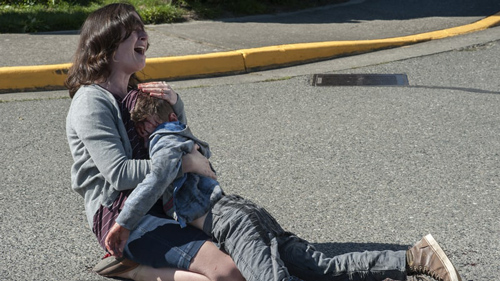

A tragic accident and a brutal murder mark a powerful and disturbing episode.

Harry Dean Stanton is 90 years old, though he's looked so world weary for so long that he seems somehow ageless and immortal. In light of the key Twin Peaks players who've died before the series' return to the air – Jack Nance, Frank Silva, Frances Bay, Don S. Davis, Warren Frost, David Bowie, and most hauntingly Miguel Ferrer and Catherine Coulson, who reprised their roles as Albert Rosenfield and the Log Lady before they passed away – we're fortunate to have him. When his character, Carl Rodd, tells his younger companion "I've been smokin' for 75 years, every fuckin' day," he literally laughs in the face of his own mortality. But way back when we first met him in Fire Walk With Me, set nearly 30 years ago, he intimated to a pair of FBI agents investigating a Black Lodge–related murder that he'd seen too much. "I've already gone places," he said. "I just want to stay where I am."
Making Stanton's Carl the Virgil on our journey to this episode's particular Hell—the hit-and-run killing of a little boy by local monster Richard Horne (Eamon Farren) lends even more weight to the moment. It provides a contrast between the old man's long life – achieved against the medical odds, by his own admission – and the life of the little boy, cut so horrifically short. It offers an unparalleled range of emotion, beginning with him simply sitting on a bench and enjoying the wind and light through the trees and ending with him seeing one of the worst things a person can see. And whether he's watching the boy's soul ascend or simply providing his mother with human connection and validation by touching her and looking into her eyes, his role is just that: to see, to bear witness. It's not that witnesses are in short supply – plenty of bystanders observe the accident and its aftermath. But when Carl takes the next step and comforts the grieving mother, he's the only one to bear witness – bear as in a cross.
Twin Peaks season three is far from over. Twelve episodes remain, and that's an entire season of most of its prestige-TV contemporaries. But so far, it seems like our own role in the series is to bear witness as well. From its mournful pilot through its brutal revelation of Laura Palmer's real killer to the prequel film which focused entirely on her suffering, abuse, and murder, Peaks has refused to shy away from showing us the emotional and physical reality of death. It's just that it does so many other things – funny, silly, sweet, sexy, profoundly bizarre and beautiful things – that that reality can get obscured in our minds. But not after an episode like this (subtitled, ironically, "Don't die," a quote from Mike the one-armed man's desperate warning to Agent Dale Cooper). The runaway truck that kills that little boy is just one facet of a thoroughly death-haunted hour. It comes out of nowhere, but it's far from out of place.
The most obvious example is the episode's other shocking death scene, in which a diminutive bald hitman operating on the orders of a Lodge-associated casino boss murders the woman who orchestrated the botched assassination of Dougie Jones. No sniper rifles or car bombs here: He breaks into her workplace and stabs her to death with an icepick. In fact, "stab" is barely an adequate descriptor: lingering shots show him working the weapon in a circle, gouging her chest away. He murders at least two other people in the office as well, though their offscreen deaths are somehow no less upsetting.
Perhaps that's because we've just gotten such a vivid lesson in the horrors of "collateral damage": After all, that little boy was run over because Richard is upset that his drug supplier Red (Balthazar Getty) used magic and mockery to intimidate him at a meeting. Lives claimed by accident or afterthought matter no less than those targeted deliberately.
But this episode also includes two pointed references to war, which is essentially murder on the largest scale possible. Carl's friend talks about how his wife Linda, an injured veteran, had to wait months for the government to provide her with the electric wheelchair she needs. Later, after another scene in which Sheriff Frank Truman gets torn a new one by his unhinged wife, an older deputy tells her loathsome colleague Chad that Mrs. Truman was changed irrevocably by the suicide of her son. Chad's subsequent, heartless ridicule indicates that the Trumans' son was a veteran too, suffering from PTSD. It's hard to imagine that Twin Peaks invoked America's forever war for the first time in the same installment that houses these two gruesome death scenes by accident.
Nor is it just a coincidence that co-writers Mark Frost and David Lynch chose now to dredge up two of the biggest mysteries from Twin Peaks' past. In New York, Albert braves the rain ("Fuck Gene Kelly, you motherfucker!") to track down Diane – yes, the Diane, the Diane of all of Agent Cooper's tape recordings, previously unseen and now played by Laura Dern (who has starred in Lynch's films Blue Velvet and Wild at Heart). And after a series of synchronous events that begin with a dropped coin in the Sheriff's Department men's room, Deputy Chief Hawk fulfills the Log Lady's prophecy and locates missing pages from Laura Palmer's diary. "The good Dale is in the Lodge, and he can't leave," she was told in a dream before her death all those years ago. "Write it in your diary." It's hard to avoid connecting those dots.
In other words, two crucial links to the murdered child who set the entire chain of events in motion are uncovered in an episode that forces us to confront the killing of children face-on. Laura's face appears in the opening credits every week, but this is a way to make her presence, and her absence, hit home. Doing any less would be a cop out, a dodge, a refusal to bear witness. "What kind of world are we living in where people can behave like this—treat other people this way, without any compassion or feeling for their suffering?" asks Janey-E Jones (Naomi Watts) elsewhere in the episode. "We are living in a dark, dark age." This show has the courage to shine a light on it.